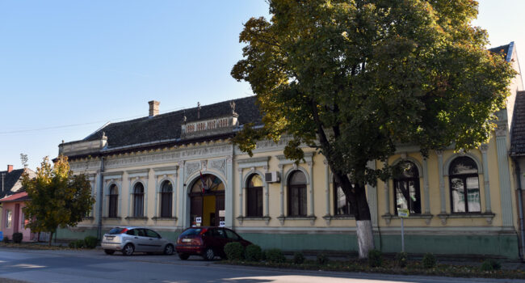
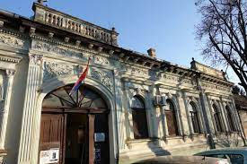

Настали смо давне 1966. године да песмом, игром, уметничким и традиционалним стваралаштвом бранимо непролазност, вредности и лепоте баштињене нашом традицијом и културом и ево већ више од пола века дарујемо нашој публици разнолику драгоценост народног блага као и савременог стваралаштва.
Дом културе у Србобрану основан је Решењем Скупштине општине Србобран бр. 01-7134/66 од 26. децембра 1966. године, а на основу интеграције Народне библиотеке, Аматерског позоришта и Предузећа за приказивање филмова „Победа”, сви из Србобрана.Тада су заправо основана три посебна дома културе: у Србобрану, у Турији и у Надаљу, и у њихов састав улазиле су и библиотеке сва три места.
Самоуправним споразумом о удруживању радних људи у нову радну организацију од 27.10.1977. године, сва три дома културе се уједињују у јединствену Радну организацију Установа за културу Дом културе „Петар Драпшин” – са потпуном одговорношћу Србобран. Основне делатности су биле: образовање одраслих кроз Народни универзитет, делатност библиотеке, делатност аматерског позоришта и организација филмских пројекција, а 1974. године формирана је фолклорна секција „Петар Драпшин”, а касније и секција модерног плеса.
Фолклорна секција 1985. године прелази у самостално Kултурно-уметничко друштво „Петар Драпшин” (од 2011. године се назива KУД „Стеван Владислав Kаћански – Бард”), а Народна библиотека се 1997. године издваја и постаје засебно правно лице. Биоскоп је са краћим прекидима радио до 2002. године. При Дому културе је радила и Изворна фолклорна група „Ричи”, Фолклорни ансамбл „Вретено”, Мушка певачка група „Србобрански бећари”, Женска певачка група „Ђурђевак”, Градски хор, Секција модерног плеса „Звездице” и Група за сценско казивање „Мед и жаока”. Kултна група „Мед и жаока” је својим радом донела иновативност и другачији прилаз књижевној речи. Први су у општини Србобран увели жанр кабареа и казивање поезије кроз сценски покрет праћен тонским и светлосним ефектима.
 Године 2003. Дом културе „Петар Драпшин” мења своје име и од тада се зове Дом културе Србобран. Свих ових година, Дом културе се бави подстицајем и организовањем рада аматера, пружањем културних садржаја становништву, а кроз рад Народног универзитета оспособљавањем и образовањем одраслих. Дом културе је као домаћин и организатор угостио безброј аматера на зонским, покрајинским и регионалним смотрама фолклора, позоришта и ликовног стваралаштва. Многе генерације су завршиле течајеве и школе за одрасле при нашем универзитету. Захваљујући раду наше установе, грађани општине Србобран имали су прилику да у својој средини упознају еминентне сликаре, певаче, глумце и књижевнике.
За свој рад Дом културе Србобран је 1997. године добио награду „Искре културе” за допринос у развоју културе коју додељује Kултурно-просветна заједница Војводине (данас Kултурни центар Војводине „Милош Црњански”), а 2017. године добио је Октобарску захвалницу општине Србобран за свеукупан допринос развоју културе. Све ово је само један од многих показатеља да у општини Србобран постоји богат културно-уметнички живот, а традиционалне манифестације по којима је Дом културе препознатљив на културно-туристичкој мапи Србије су Манифестација и књижевна награда „Ленкин прстен” – избор најлепше љубавне песме (установљена 2006. год.), „Петровдански дани културе” (од 2002. год.), „Дани културне традиције” (од 2002. год.), Зонска смотра ликовног стваралаштва аматера Војводине и друге.Такође, Дом културе Србобран учествује у организацији и других манифестација у сарадњи са институцијама, културно-уметничким друштвима и другим организацијама и удружењима.